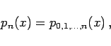
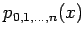
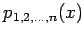
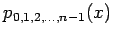
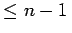
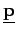
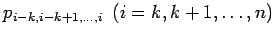

Inhalt Index DeskTop Bronstein

 Numerische Mathematik Approximation, Ausgleichsrechnung, Harmonische Analyse Polynominterpolation
Numerische Mathematik Approximation, Ausgleichsrechnung, Harmonische Analyse Polynominterpolation


In vielen praktischen Fällen wird das Interpolationspolynom pn(x) explizit nicht benötigt, sondern nur sein Funktionswert an einer vorgegebenen Stelle x des Interpolationsgebietes. Zur Berechnung dieses Funktionswertes kann man nach AITKEN/NEVILLE rekursiv vorgehen. Dazu verwendet man zweckmäßigerweise die Bezeichnung
|  | (19.161) |
in der die Indizierung die verwendeten Stützstellen und damit auch den Grad des Interpolationspolynoms angibt. Es gilt
d.h., der Funktionswert  ergibt sich durch lineare Interpolation aus den Funktionswerten von  und , zwei Interpolationspolynomen vom Grad . Die gezielte Anwendung von (19.162) führt auf ein Schema, das für den Fall n=4 angegeben werden soll:
Die Elemente von (19.163) werden spaltenweise berechnet. Ein neuer Wert im Schema entsteht jeweils aus dem links daneben stehenden und dem unmittelbar über diesem stehenden Wert, z.B.
Für die Durchführung des Algorithmus von AITKEN/NEVILLE auf dem Computer braucht man nach Lit. 19.3 nur einen Vektor  mit n+1 Komponenten, der nacheinander die einzelnen Spalten von (19.163) aufnimmt. Dazu wird vereinbart, daß der Wert  der k-ten Spalte die i-te Komponente pi von wird. Damit sind die Spalten von (19.163) von oben nach unten zu berechnen, um die noch benötigten Werte zur Verfügung zu haben. Der Algorithmus besteht dann aus folgenden zwei Schritten: